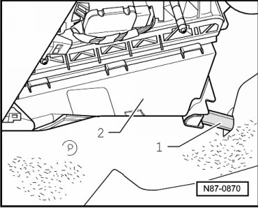
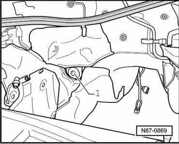

Condensation Water Hose with Valve, Checking
Condensation Water Hose with Valve, Checking
- Remove footwell trim on front passenger side.
• The condensation water hose - 1 - must be able to be connected to connection of heating and A/C unit - 2 - without pre-tension.

• The condensation water hose must not be constricted in its cross section through the insulation mat.
- Rework insulation mat if necessary.
• Condensation water hose must sit securely on connection for condensation water hose on heating and A/C unit.
- The valve is located in lower right of engine compartment below bulkhead.
• For the purpose of a better illustration, the valve - 1 - is shown with subframe removed.

• The condensation drainage valve may not be bonded by wax or underbody protection, it must close correctly.
- Check valve - 1 - from below when vehicle is raised.